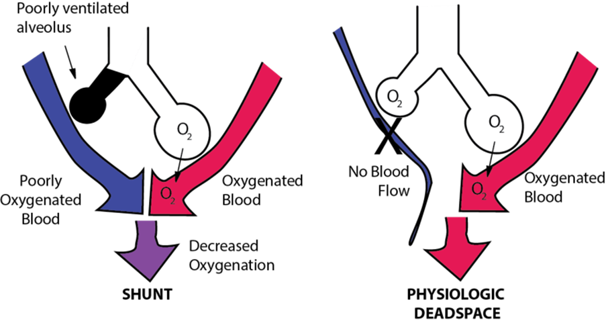

- Ventilation-Perfusion Ratio (V/Q)
- Pulmonary arterioles try to maximize V/Q ratio ≈ 0.8
- Systemic arterioles (e.g., muscle beds) dilate if arterial O2 levels (PaO2) are low -> more blood with O2 delivered.
- Pulmonary arterioles constrict if alveolar O2 levels (PAO2) are low. Dilate if PAO2 high.
- What does this accomplish if PAO2 is low in individual alveoli or a region of lung?
- If PAO2 is high in alveoli or a region of lung?
- V/Q mismatch occurs with different disease states.
